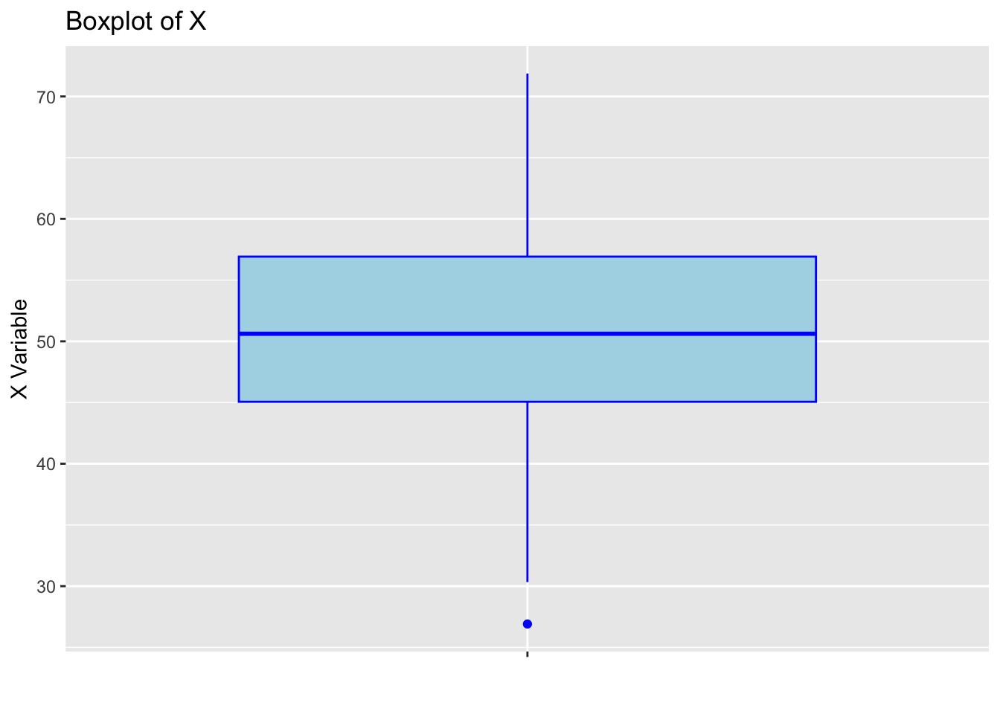
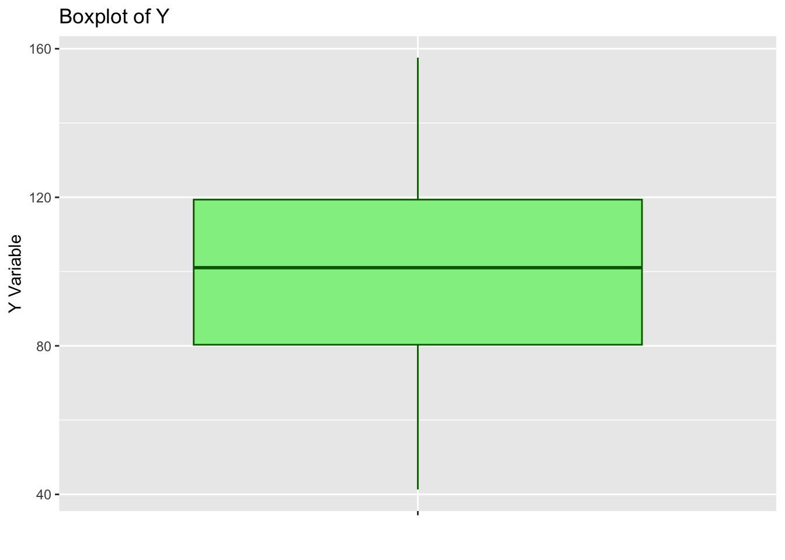
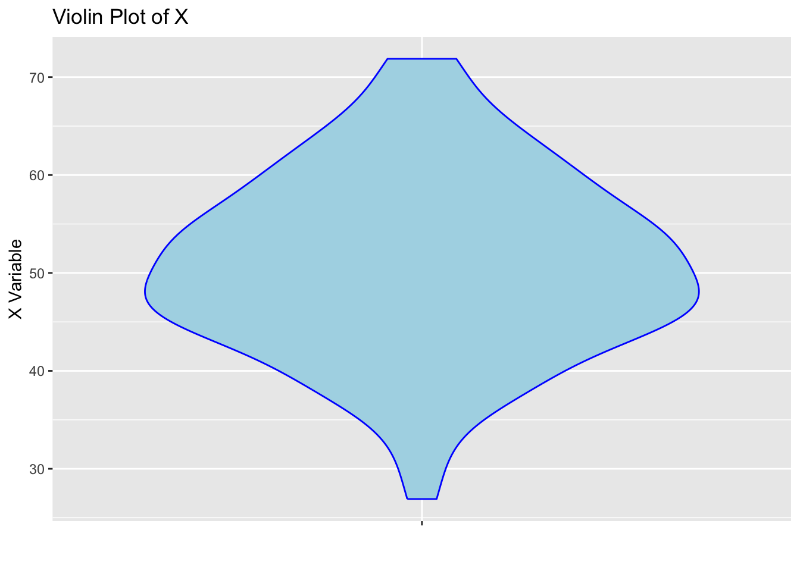
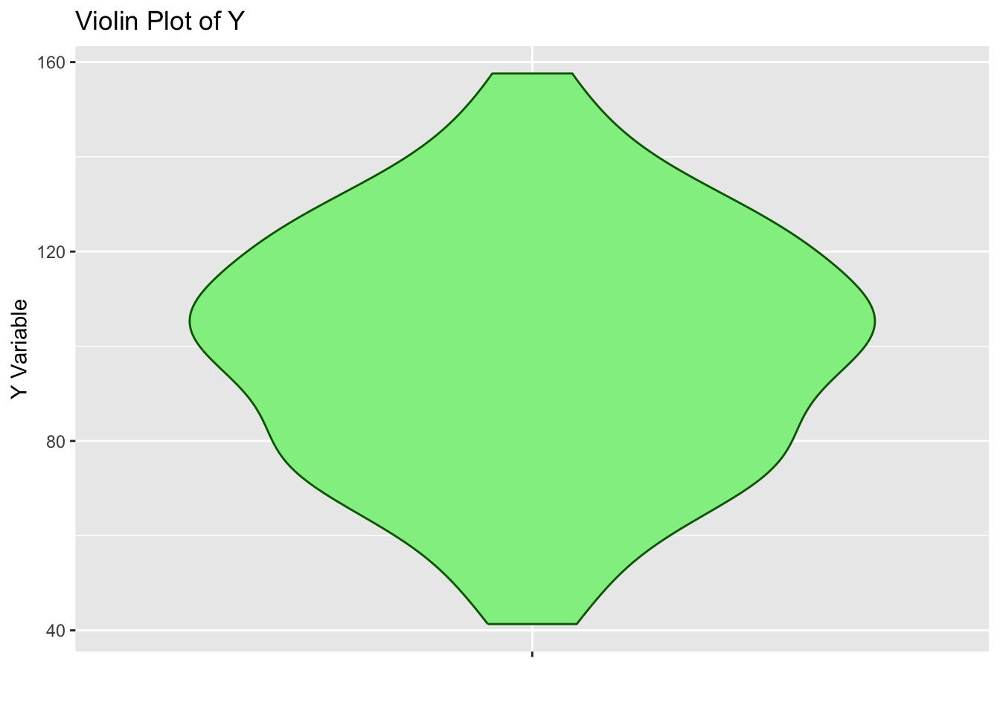
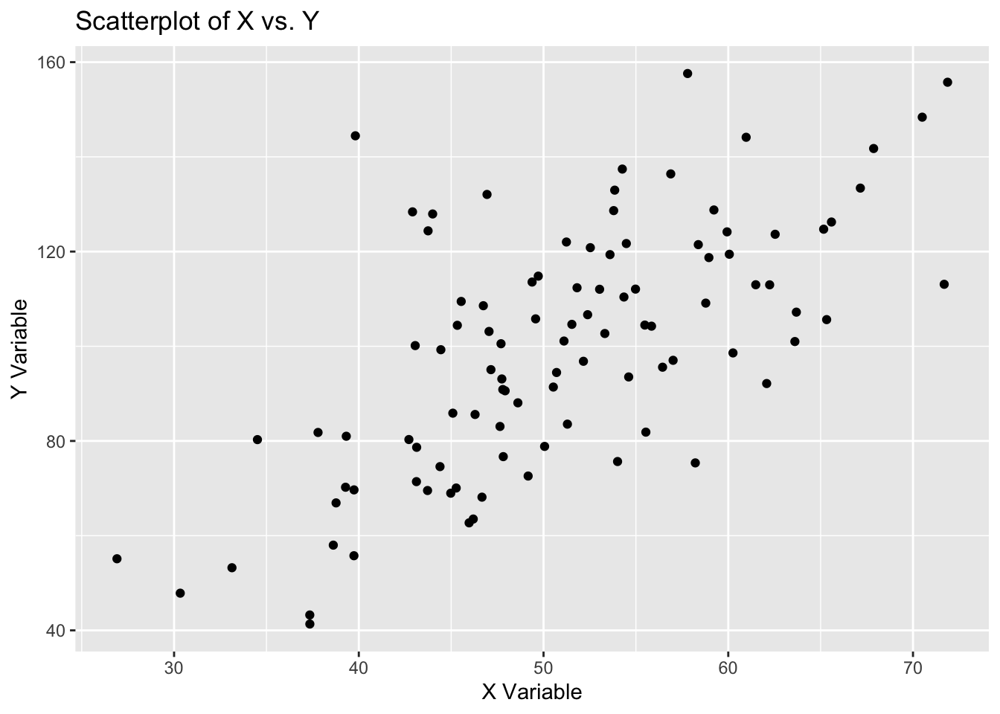
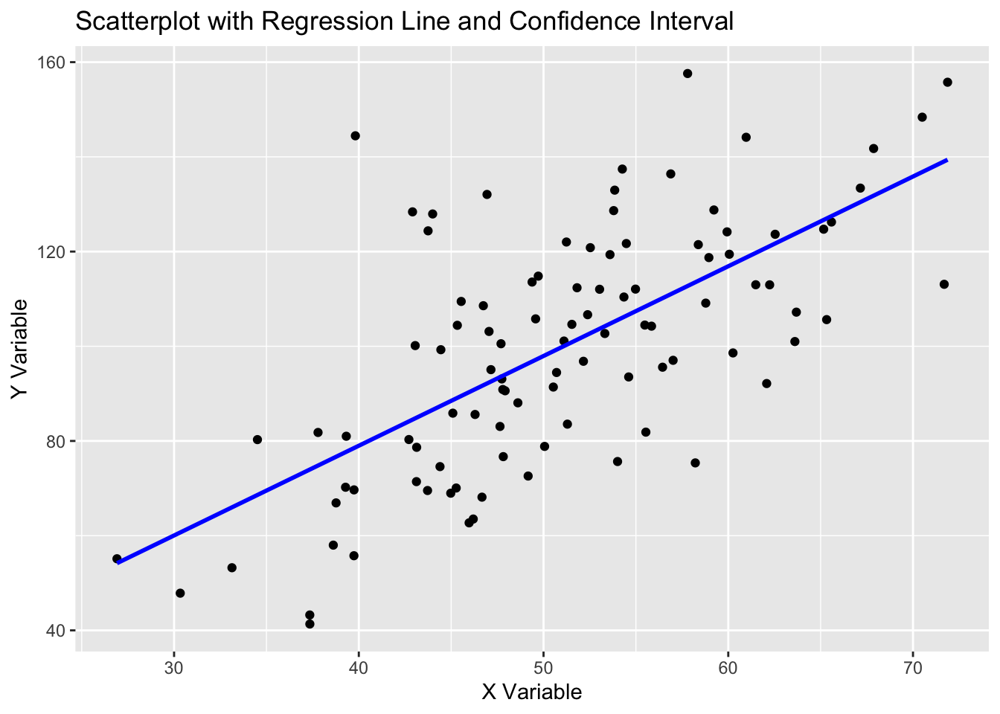
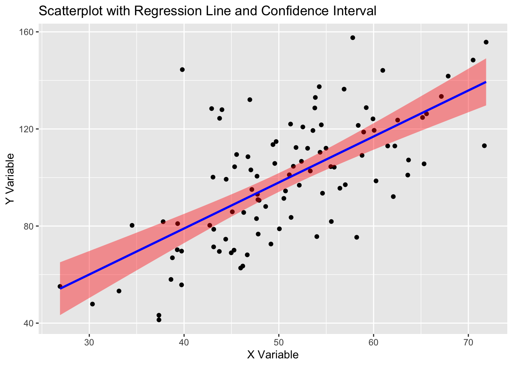

In this tutorial, we’ll explore how to create basic plots in R using the powerful ggplot2 package. We’ll start by generating a dataset, then we’ll create and explain some boxplots, violin plots, a a simple scatterplot, and then we’ll enhance the scatterplot with a regression line and confidence intervals.
Generating a Correlated Dataset
We first need to create a dataset with two variables, X and Y, that exhibit some correlation. We’ll use the tibble package to create this dataset.
library(tibble)library(ggplot2)# Set a random seed for reproducibilityset.seed(123)# Generate correlated datadata <-tibble(X =rnorm(100, mean =50, sd =10),Y =2* X +rnorm(100, mean =0, sd =20))# Display the first few rowshead(data)
# A tibble: 6 × 2
X Y
<dbl> <dbl>
1 44.4 74.6
2 47.7 101.
3 65.6 126.
4 50.7 94.5
5 51.3 83.6
6 67.2 133.
Visualizing Distributions: Boxplots and Violin Plots
What Are Boxplots?
Boxplots are useful for visualizing the distribution of a numeric variable. They display the median, quartiles, and potential outliers, providing a concise summary of the data.
Visualizing X with a Boxplot
# Boxplot of Xggplot(data, aes(x ="", y = X)) +geom_boxplot(fill ="lightblue", color ="blue") +labs(title ="Boxplot of X",x ="",y ="X Variable" )

Boxplot showing the distribution of X.
Code explanation:
ggplot(data, aes(x = "", y = X)): Initializes the plot using the dataset data.
The empty string "" on the x-axis groups all values into a single boxplot.
y = X maps the X variable to the y-axis.
geom_boxplot(fill = "lightblue", color = "blue"): Adds the boxplot layer.
fill = "lightblue": Sets the interior color of the boxplot to light blue.
color = "blue": Sets the outline color of the boxplot to blue.
labs(): Customizes the plot labels:
title: Sets the title of the plot, describing the visualization as a boxplot of X.
x: Removes the x-axis label since the x-axis is not meaningful in this case.
y: Labels the y-axis as “X Variable”.
Visualizing Y with a Boxplot
Let’s use a boxplot to visualize the distribution of Y.
# Boxplot of Yggplot(data, aes(x ="", y = Y)) +geom_boxplot(fill ="lightgreen", color ="darkgreen") +labs(title ="Boxplot of Y",x ="",y ="Y Variable" )

Boxplot showing the distribution of Y.
What Are Violin Plots?
Violin plots are similar to boxplots but provide additional information about the data distribution. They combine a boxplot with a kernel density plot, showing the density of the data at different values.
Visualizing X with a Violin Plot
# Violin plot of Xggplot(data, aes(x ="", y = X)) +geom_violin(fill ="lightblue", color ="blue") +labs(title ="Violin Plot of X",x ="",y ="X Variable" )

Violin plot showing the distribution of X.
Code explanation:
ggplot(data, aes(x = "", y = X)): Starts the plot using the dataset data.
The empty string "" on the x-axis creates a single group for all X values.
y = X maps the X variable to the y-axis.
geom_violin(fill = "lightblue", color = "blue"): Adds a violin plot layer.
fill = "lightblue": Fills the violin plot with light blue to highlight the distribution.
color = "blue": Sets the outline color of the violin plot to blue.
labs(): Provides descriptive labels:
title: Specifies the plot title, indicating this is a violin plot of X.
x: Removes the x-axis label since it has no meaning here.
y: Labels the y-axis as “X Variable”.
Visualizing Y with a Violin Plot
Let’s use a violin plot to visualize the distribution of Y.
# Violin plot of Yggplot(data, aes(x ="", y = Y)) +geom_violin(fill ="lightgreen", color ="darkgreen") +labs(title ="Violin Plot of Y",x ="",y ="Y Variable" )

Violin plot showing the distribution of Y.
Creating a Basic Scatterplot with geom_point()
Scatterplots are a fundamental tool for visualizing the relationship between two continuous variables. Each point represents an observation, with its position determined by the values of the two variables.
Now, let’s visualize the relationship between X and Y using a scatterplot. We’ll use geom_point() for this purpose.
library(ggplot2)# Basic scatterplotggplot(data, aes(x = X, y = Y)) +geom_point() +labs(title ="Scatterplot of X vs. Y",x ="X Variable",y ="Y Variable" )

Scatterplot showing the relationship between X and Y.
Code explanation:
ggplot(data, aes(x = X, y = Y)): Creates the base plot, specifying the dataset data and mapping X to the x-axis and Y to the y-axis.
geom_point(): Adds a scatterplot layer where each point represents a data observation.
labs(): Enhances the plot with labels:
title: Sets the main title to “Scatterplot of X vs. Y”.
x: Labels the x-axis as “X Variable”.
y: Labels the y-axis as “Y Variable”.
Adding a Linear Regression Line with geom_smooth()
Linear regression is a statistical method for modeling the relationship between two variables. It fits a straight line through the data that minimizes the overall prediction error. This method can be used to determine whether there is a statistically significant association between variables, and it can also be used to predict values of one variable (the response variable, in our case, Y) for unseen values of another (the explanatory variable, in our case, X).
To better understand the relationship between X and Y, we’ll add a regression line using geom_smooth() with the lm method.
# Scatterplot with linear regression lineggplot(data, aes(x = X, y = Y)) +geom_point() +geom_smooth(method ="lm", se =FALSE, color ="blue", alpha =0.3, linetype ="solid") +labs(title ="Scatterplot with Regression Line and Confidence Interval",x ="X Variable",y ="Y Variable" )
`geom_smooth()` using formula = 'y ~ x'

Scatterplot with a linear regression line.
Code explanation:
ggplot(data, aes(x = X, y = Y)): Initializes the plot with the dataset data.
Maps X to the x-axis and Y to the y-axis.
geom_point(): Adds points to create the scatterplot, showing the relationship between X and Y.
geom_smooth(method = "lm", se = FALSE, color = "blue", linetype = "solid"): Adds a regression line to the scatterplot.
method = "lm": Specifies the use of linear regression to fit the line.
se = FALSE: Disables the display of the error (confidence interval) band around the regression line.
color = "blue": Colors the regression line blue.
linetype = "solid": Draws the regression line as a solid line.
labs(): Adds labels:
title: Indicates the plot includes a regression line without confidence intervals.
x: Labels the x-axis as “X Variable”.
y: Labels the y-axis as “Y Variable”.
Including a Confidence Interval
Finally, we enhance the plot by including a 95% confidence interval around the regression line. This provides more context about the variability in the predictions.
# Scatterplot with regression line and confidence intervalggplot(data, aes(x = X, y = Y)) +geom_point() +geom_smooth(method ="lm", se =TRUE, fill ="red", color ="blue") +labs(title ="Scatterplot with Regression Line and Confidence Interval",x ="X Variable",y ="Y Variable" )
`geom_smooth()` using formula = 'y ~ x'

Scatterplot with a linear regression line and confidence interval.
Code explanation:
ggplot(data, aes(x = X, y = Y)): Initializes the plot, mapping X to the x-axis and Y to the y-axis.
geom_point(): Adds points for the scatterplot, showing individual observations.
geom_smooth(method = "lm", se = TRUE, level = 0.95, fill = "lightblue", color = "blue", alpha = 0.3, linetype = "solid"): Adds a regression line and an error (confidence interval) band.
method = "lm": Uses linear regression to compute the regression line.
se = TRUE: Displays the confidence interval band around the regression line.
level = 0.95: Sets the confidence level for the error band to 95%.
fill = "lightblue": Colors the confidence interval band light blue.
color = "blue": Colors the regression line blue.
alpha = 0.3: Makes the confidence interval band slightly transparent.
linetype = "solid": Specifies a solid line style for the regression line.
labs(): Customizes the plot labels:
title: Indicates the plot includes a regression line with confidence intervals.
x: Labels the x-axis as “X Variable”.
y: Labels the y-axis as “Y Variable”.
Conclusion
In this tutorial, we demonstrated how to generate a dataset, create a scatterplot, and enhance it with a regression line and confidence intervals using ggplot2. These basic tools can be the foundation for much more complex data visualization in R.